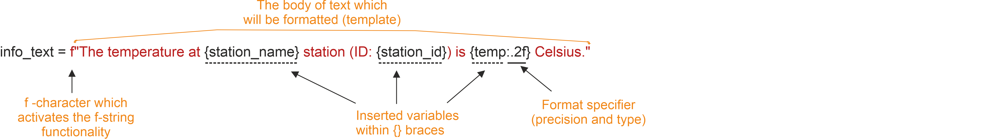

Basic elements of Python
Contents
Basic elements of Python#
In this section, we will introduce some basic programming concepts in Python.
Simple Python math#
We will start our Python introduction by learning a bit of the basic operations you can perform. Python can be used as a simple calculator. Let’s try it out with some simple math operations such as 1 + 1 or 5 * 7. When using a Jupyter Notebook you can press Shift-Enter to execute the code cells.
1 + 1
5 * 7
If you want to edit and re-run some code, simply make changes to the Python cell and press Shift-Enter to execute the modified code.
Functions#
You can use Python for more advanced math by using a function. Functions are pieces of code that perform a single action such as printing information to the screen (e.g., the print() function). Functions exist for a huge number of operations in Python.
Let’s try out a few simple examples using functions to find the sine or square root of a value using the sin() and sqrt() functions.
sin(3)
sqrt(4)
Wait, what? Python can’t calculate square roots or do basic trigonometry? Of course it can, but we need one more step.
Math operations#
The list of basic arithmetic operations that can be done by default in Python are listed in Table 2.1.
: Table 2.1. Basic math operations in Python.
Operation |
Symbol |
Example syntax |
Returned value |
|---|---|---|---|
Addition |
|
|
|
Subtraction |
|
|
|
Multiplication |
|
|
|
Division |
|
|
|
Exponentiation |
|
|
|
For anything more advanced, we need to load a module or library. For math operations, this module is called math and it can be loaded by typing import math.
import math
Now that we have access to functions in the math module, we can use it by typing the module name, a period (dot), and the the name of the function we want to use. For example, math.sin(3).
math.sin(3)
math.sqrt(4)
Let’s summarize what we’ve just seen with modules:
A module is a group of code items such as functions that are related to one another. Individual modules are often in a group referred to as a library.
Modules can be loaded using the
importstatement. Functions that are part of the modulemodulenamecan then be used by typingmodulename.functionname(). For example,sin()is a function that is part of themathmodule, and used by typingmath.sin()with some number between the parentheses.In a Jupyter Notebook the variables you define earlier code cells will be available for use in the cells that follow as long as you have already executed the cells.
Note that modules may also contain constants such as math.pi. Parentheses are not used when calling constant values.
math.pi
Question 2.1#
Use your Python skills to calculate the sine of pi. What value do you expect for this calculation? Did you get the expected result?
# Note that lines starting with "#" are ignored in Python.
# Use this cell to enter your solution.
# Solution
math.sin(math.pi)
Combining functions#
Functions can also be combined. The print() function returns values within the parentheses as text on the screen. Let’s print the value of the square root of four.
print(math.sqrt(4))
You can also combine text with other calculated values using the print() function. For example, print('Two plus two is', 2+2) would generate text reading ‘Two plus two is 4’. Let’s combine the print() function with the math.sqrt() function in to produce text that reads The square root of 4 is 2.0.
print("The square root of 4 is", math.sqrt(4))
Variables#
A variable can be used to store values calculated in expressions and used for other calculations.
Variable assignment#
Assigning value to variables is straightforward. To assign a value, you simply type variable_name = value, where variable_name is the name of the variable you wish to define. Let’s define a variable called temp_celsius and assign it a value of ‘10.0’. Note that when the variable is assigned there is no output to the screen.
temp_celsius = 10.0
In order to see the value that has been assigned to the temp_celsius variable you need to either use the print() function (e.g., print(temp_celsius)) or simply type the name of the variable into the code cell to have its value displayed. This is a convenient way to see calculated values in code cells of Jupyter Notebooks, so for simplicity we will avoid using the print() function when possible in this book. In some cases, however, the print() function is needed, such as displaying output from multiple lines of a single code cell.
temp_celsius
It is also possible to combine text and numbers and even use some math when printing out variable values. The idea is similar to the examples of adding 2+2 or calculating the square root of four from the previous section. Next, we will print out the value of temp_celsius in degrees Fahrenheit by multiplying temp_celsius by 9/5 and adding 32. This should be done within the print() function to produce output that reads ‘Temperature in Fahrenheit: 50.0’.
print("Temperature in Fahrenheit:", 9 / 5 * temp_celsius + 32)
Question 2.2#
Define a variable and display its value on the screen. The variable value can be anything you like, and you can even consider defining several variables and printing them out together. Consider using pothole_case_naming for your variable name.
# Use this cell to enter your solution.
# Solution
my_variable = "Python is cool!"
my_variable
Updating variables#
Values stored in variables can also be updated. Let’s redefine the value of temp_celsius to be equal to 15.0 and print its value using the print() function.
temp_celsius = 15.0
print("temperature in Celsius is now:", temp_celsius)
Please note that if you try to run some code that accesses a variable that has not yet been defined you will get a NameError message.
print("Temperature in Celsius:", 5 / 9 * (tempFahrenheit - 32))
When running the code in a Jupyter Notebook variables get stored in memory only after executing the code cell where the variable is defined.
tempFahrenheit = 9 / 5 * temp_celsius + 32
Now that we have defined tempFahrenheit, we can run again the print statement without getting a NameError. Let’s print out the values of temp_celsius and tempFahrenheit to check their current values.
print("temperature in Celsius:", temp_celsius, "and in Fahrenheit:", tempFahrenheit)
The number beside the cell, for example In [21], tells you the order in which the Python cells have been executed. This way you can see a history of the order in which you have run the cells.
Variable values#
Changing the value of a variable does not affect other variable values. Let’s redefine temp_celsius to be equal to 20.0, and print out the values of temp_celsius and tempFahrenheit.
temp_celsius = 20.0
print(
"temperature in Celsius is now:",
temp_celsius,
"and temperature in Fahrenheit is still:",
tempFahrenheit,
)
Data types#
A data type determines the characteristics of data in a program. There are 4 basic data types in Python as shown in Table 2.2.
: Table 2.2. Basic data types in Python.
Data type name |
Data type |
Example |
|---|---|---|
|
Whole integer values |
|
|
Decimal values |
|
|
Character strings |
|
|
True/false values |
|
The data type can be found using the type() function. As you will see, the data types are important because some are not compatible with one another. Let’s define a variable weatherForecast and assign it the value 'Hot'. After this, we can check its data type using the type() function.
weatherForecast = "Hot"
type(weatherForecast)
Let’s also check the type of tempFahrenheit. What happens if you try to combine tempFahrenheit and weatherForecast in a single math equation such as tempFahrenheit = tempFahrenheit + 5.0 * weatherForecast?
type(tempFahrenheit)
tempFahrenheit = tempFahrenheit + 5.0 * weatherForecast
In this case we get at TypeError because we are trying to execute a math operation with data types that are not compatible. There is no way in Python to multpily decimal values with a character string.
Question 2.3#
As it turns out, it is possible some math with character strings in Python. Define two variables and assign them character string values. What happens if you try to add two character strings together? Can you subtract them? Which other math operations work for character strings?
# Use this cell to enter your solution.
# Solution
first_variable = "Python"
second_variable = " is cool!"
print(first_variable + second_variable)
print(5 * first_variable)
print(first_variable - second_variable)
Lists and indices#
So far, we have learned a bit about variables, their values, and data types in this section. We will now continue with a new data type called a list. Using a list, we can store many related values together with a single variable. In Python, there are several different types of data that can be used to store values together in a collection, and a list is the simplest type.
To explore lists, we will be using data related to Finnish Meteorological Institute (FMI) observation stations 1. For each station, a number of pieces of information are given, including the name of the station, an FMI station ID number (FMISID), its latitude, its longitude, and the station type.
Creating a list#
Let’s first create a list of selected station_name values and print it to the screen.
station_names = [
"Helsinki Harmaja",
"Helsinki Kaisaniemi",
"Helsinki Kaivopuisto",
"Helsinki Kumpula",
]
station_names
We can also check the type of the station_names list using the type() function.
type(station_names)
Here we have a list of 4 station_name values in a list called station_names. As you can see, the type() function recognizes this as a list. Lists can be created using the square brackets [ and ], with commas separating the values in the list.
Index values#
To access an individual value in the list we need to use an index value. An index value is a number that refers to a given position in the list. Let’s check out the first value in our list as an example by printing out station_names[1]:
station_names[1]
Wait, what? This is the second value in the list we’ve created, what is wrong? As it turns out, Python (and many other programming languages) start values stored in collections with the index value 0. Thus, to get the value for the first item in the list, we must use index 0. Let’s print out the value at index 0 of station_names.
station_names[0]
OK, that makes sense, but it may take some getting used to…
A useful analog - Bill the vending machine#
As it turns out, index values are extremely useful, common in many programming languages, yet often a point of confusion for new programmers. Thus, we need to have a trick for remembering what an index value is and how they are used. For this, we need to be introduced to Bill (Figure 2.1).

Figure 2.1. Bill, the vending machine.
As you can see, Bill is a vending machine that contains 6 items. Like Python lists, the list of items available from Bill starts at 0 and increases in increments of 1.
The way Bill works is that you insert your money, then select the location of the item you wish to receive. In an analogy to Python, we could say Bill is simply a list of food items and the buttons you push to get them are the index values. For example, if you would like to buy a taco from Bill, you would push button 3. If we had a Python list called Bill, an equivalent operation could simply be
print(Bill[3])
Taco
Number of items in a list#
We can find the length of a list using the len() function.
len(station_names)
Just as expected, there are 4 values in our list and len(station_names) returns a value of 4.
Index value tips#
If we know the length of the list, we can now use it to find the value of the last item in the list, right? What happens if you print the value from the station_names list at index 4, the value of the length of the list?
station_names[4]
An IndexError? That’s right, since our list starts with index 0 and has 4 values, the index of the last item in the list is len(station_names) - 1. That isn’t ideal, but fortunately there’s a nice trick in Python to find the last item in a list. Let’s first print the station_names list to remind us of the values that are in it.
station_names
To find the value at the end of the list, we can print the value at index -1. To go further up the list in reverse, we can simply use larger negative numbers, such as index -4.
station_names[-1]
station_names[-4]
Yes, in Python you can go backwards through lists by using negative index values. Index -1 gives the last value in the list and index -len(station_names) would give the first. Of course, you still need to keep the index values within their ranges. What happens if you check the value at index -5?
station_names[-5]
Modifying list values#
Another nice feature of lists is that they are mutable, meaning that the values in a list that has been defined can be modified. Consider a list of the observation station types corresponding to the station names in the station_names list.
station_types = [
"Weather stations",
"Weather stations",
"Weather stations",
"Weather stations",
]
station_types
Let’s change the value for station_types[2] to be 'Mareographs' and print out the station_types list again.
station_types[2] = "Mareographs"
station_types
Data types in lists#
One of the benefits of a list is that they can be used to store more than one type of data. Let’s consider that instead of having a list of each station name, FMISID, latitude, etc. we would like to have a list of all of the values for a single station. In this case we will create a list of values for the ‘Helsinki Kaivopuisto’ station.
station_name = "Helsinki Kaivopuisto"
station_id = 132310
station_lat = 60.15
station_lon = 24.96
station_type = "Mareographs"
Now that we have defined five variables related to the Helsinki Kaivopuisto station, we can combine them in a list similar to how we have done previously.
station_hel_kaivo = [station_name, station_id, station_lat, station_lon, station_type]
station_hel_kaivo
Here we have one list with 3 different types of data in it. We can confirm this using the type() function. Let’s check the type of station_hel_kaivo and the types of the values at indices 0-2.
type(station_hel_kaivo)
type(station_hel_kaivo[0]) # The station name
type(station_hel_kaivo[1]) # The FMISID
type(station_hel_kaivo[2]) # The station latitude
Note that although it is possible to have different types of data in a Python list, you are encouraged to create lists containing the same data types. Data science workflows are often built around handling collections of data of the same type and having multiple data types in a list may cause problems for software you are trying to use.
Adding and removing values from lists#
Finally, we can add and remove values from lists to change their lengths. Let’s consider that we no longer want to include the first value in the station_names list. Since we haven’t see that list in a bit, let’s first print it to the screen.
station_names
del allows values in lists to be removed. It can also be used to delete values from memory in Python. To remove the first value from the station_names list, we can simply type del station_names[0]. If you then print out the station_names list, you should see the first value has been removed.
del station_names[0]
station_names
If we would instead like to add a few samples to the station_names list, we can type station_names.append('List item to add'), where 'List item to add' would be the text that would be added to the list in this example. Let’s add two values to our list: 'Helsinki lighthouse' and 'Helsinki Malmi airfield' and check the list contents after this.
station_names.append("Helsinki lighthouse")
station_names.append("Helsinki Malmi airfield")
station_names
As you can see, we add values one at a time using station_names.append(). list.append() is called a method in Python, which is a function that works for a given data type (a list in this case).
Appending to an integer? Not so fast…#
Let’s consider our list station_names. As we know, we already have data in the list station_names, and we can modify that data using built-in methods such as station_names.append(). In this case, the method append() is something that exists for lists, but not for other data types. It is intuitive that you might like to add (or append) things to a list, but perhaps it does not make sense to append to other data types. Let’s create a variable station_name_length that we can use to store the length of the list station_names. We can then print the value of station_name_length to confirm the length is correct.
station_name_length = len(station_names)
station_name_length
If we check the data type of station_name_length, we can see it is an integer value, as expected.
type(station_name_length)
Let’s see what happens if we try to append the value 1 to station_name_length.
station_name_length.append(1)
Here we get an AttributeError because there is no method built in to the int data type to append to int data. While append() makes sense for list data, it is not sensible for int data, which is the reason no such method exists for int data.
Some other useful list methods#
With lists we can do a number of useful things, such as count the number of times a value occurs in a list or where it occurs. The list.count() method can be used to find the number of instances of an item in a list. For instance, we can check to see how many times 'Helsinki Kumpula' occurs in our list station_names by typing station_names.count('Helsinki Kumpula').
station_names.count("Helsinki Kumpula")
Similarly, we can use the list.index() method to find the index value of a given item in a list. Let’s find the index of 'Helsinki Kumpula' in the station_names list.
station_names.index("Helsinki Kumpula")
The good news here is that our selected station name is only in the list once. Should we need to modify it for some reason, we also now know where it is in the list (index 2).
There are two other common methods for lists that we need to see.
Reversing a list#
The list.reverse() method can be used to reverse the order of items in a list. Let’s reverse our station_names list and then print the results.
station_names.reverse()
station_names
Yay, it works! A common mistake when reversing lists is to do something like station_names = station_names.reverse(). Do not do this! When reversing lists with .reverse() the None value is returned (this is why there is no screen ouput when running station_names.reverse()). If you then assign the output of station_names.reverse() to station_names you will reverse the list, but then overwrite its contents with the returned value None. This means you’ve deleted the contents of your list.
Sorting a list#
The list.sort() method works in a similary way as reversing a list. Let’s sort our station_names list and print its contents.
station_names.sort() # Notice no output here...
station_names
As you can see, the list has been sorted alphabetically using the list.sort() method, but there is no screen output when this occurs. Again, if you were to assign that output to station_names the list would get sorted, but the contents would then be assigned None. As you may have noticed, Helsinki Malmi airfield comes before Helsinki lighthouse in the sorted list. This is because alphabetical sorting in Python places capital letters before lowercase letters.
Making different data types work together#
Earlier in this section we defined five variables related to the Helsinki Kaviopuisto observation station:
station_namestation_idstation_latstation_lonstation_type
which refer to the the name of the station, an FMI station ID number (FMISID), its latitude, its longitude, and the station type. Each variable has a unique name and they store different types of data.
Data types and their compatibility#
As you likely recall, we can explore the different types of data stored in variables using the type() function.
Let’s now check the data types of the variables station_name, station_id, and station_lat.
type(station_name)
type(station_id)
type(station_lat)
As expected, we see that the station_name is a character string, the station_id is an integer, and the station_lat is a floating point number. Being aware of the data type of variables is important because some are not compatible with one another. Let’s see what happens if we try to sum up the variables station_name and station_id.
station_name + station_id
Here we get a TypeError because Python does not know to combine a string of characters (station_name) with an integer value (station_id).
Converting data from one type to another#
It is not the case that things like the station_name and station_id cannot be combined at all, but in order to combine a character string with a number we need to perform a data type conversion to make them compatible. Let’s convert station_id to a character string using the str() function. We can store the converted variable as station_id_str.
station_id_str = str(station_id)
We can confirm the type has changed by checking the type of station_id_str, or by checking the output of a code cell with the variable.
type(station_id_str)
station_id_str
As you can see, str() converts a numerical value into a character string with the same numbers as before. Similar to using str() to convert numbers to character strings, int() can be used to convert strings or floating point numbers to integers and float() can be used to convert strings or integers to floating point numbers.
Combining text and numbers#
Although most mathematical operations operate on numerical values, a common way to combine character strings is using the addition operator +. Let’s create a text string in the variable station_name_and_id that is the combination of the station_name and station_id variables. Once we define station_name_and_id, we can print it to the screen to see the result.
station_name_and_id = station_name + ": " + str(station_id)
station_name_and_id
Note that here we are converting station_id to a character string using the str() function within the assignment to the variable station_name_and_id. Alternatively, we could have simply added station_name and station_id_str.
Working with text (and numbers)#
The previous example showed a simple example how it is possible to combine character strings and numbers together using the + operator between the different text components. Although this approach works, it can become quite laborous and error-prone if having more complicated set of textual and/or numerical components that you should work with. Hence, next we show a few useful techniques that make manipulating strings easier and more efficient.
There are three approaches that can be used to manipulate strings in Python, namely 1) f-strings, 2) using the.format() -function and 3) using the %-operator. We recommed using the f-string approach, but we also give examples of the two other approaches because there are plenty of examples and code snippets on the web, where these string formatting approaches are still used. Hence, it is good to be aware of them all. In addition, we show a few useful methods that make working with text in different ways possible.
F-String formatting#
In the following, we show how we can combine the station_name text, station_id integer number and temp floating point number together using Python’s f-string formatting approach. In addition, we will round a decimal number (temperature) into two decimal points on-the-fly:
# Temperature with many decimals
temp = 18.56789876
# 1. F-string approach (recommended way)
info_text = f"The temperature at {station_name} station (ID: {station_id}) is {temp:.2f} Celsius."
info_text

Figure 2.2. F-string formatting explained.
As you can see, using string formatting it is possible to easily modify a body of text “interactively” based on values stored in given variables. Figure 2.2 breaks down the different parts of the string. The text that you want to create and/or modify is enclosed within the quotes preceded with letter f. You can pass any existing variable inside the text template by placing the name of the variable within the curly braces {}. Using string formatting, it is also possible to insert numbers (such as station_id and temp here) within the body of text without needing first to convert the data type to string. This is because the f-string functionality kindly does the data type conversion for us in the background without us needing to worry about it (handy!).
It is also possible to round these numbers on-the-fly to specific precision, such as two decimal points as in our example by adding format specifier (:.2f) after the variable that we want to round. The format specifier works by first adding a colon (:) after the variable name, and then specifying with dot (.) that we want to round our value to 2 decimal places (can be any digits). The final character f in the format specifier defines the type of the conversion that will be conducted: character f will convert the value to decimal number, whereas character e would make the number to appear as exponential number while character % would convert the value to percentage representation.
As we have hopefully demonstrated, f-string formatting is easy to use, yet powerful with its capability to e.g. do data conversions on the fly. Hence, it is the recommended approach for doing string manipulation nowadays in Python. Just remember to add the letter f before your string template!
Older approaches for string formatting#
As mentioned previously, there are also a couple of other approaches that can be used to achieve the same result as above. These older approaches preceded the f-string which was introduced in Python version 3.6. The first one is .format() method that is placed after the quotes, like this:
# 2. .format() approach (not recommended anymore)
text2 = (
"The temperature at {my_text_variable} (ID: {station_id}) is {temp:.2f}.".format(
my_text_variable=station_name, station_id=station_id, temp=temp
)
)
text2
As you can see, here we got the same result as with f-strings, but used the .format() which was placed after the quotes. The variables were inserted within the text template by using curly braces and giving them a name (placeholder) which should have a matching counterpart within the parentheses that link to the actual variable which will be inserted to the body of text. As you see, the placeholder does not necessarily need to have the same name as the actual variable that contains the inserted value, but it can be anything, like the name my_text_variable as in the example above.
The last (historical) string formatting approach is to use %s -operator. In this approach, the placeholder %s is added within the quotes, and the variables that are inserted into the body of text are placed inside parentheses after the % operator, like this:
# 3. %-operator approach (not recommended anymore)
text3 = "The temperature at %s (ID: %s) is %.2f" % (station_name, station_id, temp)
text3
The order of the variables within the parentheses specify which %s placeholder will receive what information. The order of the variables inside parentheses needs to be corrected always if making changes to the placing of the placeholders, and there should be exactly the same number of variables within the parentheses as there are %s placeholders within the text template. Hence, this approach is prone to errors and causing confusion, which is why we do not recommend using it.
To conclude, using the f-string approach is the easiest and most intuitive way to construct and format text. Hence, we highly recommend learning that approach and sticking with it.
Common string manipulation techniques#
In the following, we will demonstrate some of the most useful string manipulation techniques, such as splitting strings based on given character, replacing characters with new ones, slicing the strings etc. Here, our final target is to get a list of weather station locations within Helsinki represented in UPPER case (i.e. KUMPULA, KAISANIEMI, HARMAJA). The text that we will be working on is following:
text = "Stations: Helsinki Kumpula, Helsinki Kaisaniemi, Helsinki Harmaja"
Let’s start by demonstrating how we can split a string into different components based on specific character(s). we split the given text based on the colon (:) by passing the character into a method called .split():
splitted = text.split(":")
splitted
type(splitted)
As a result, the body of text was splitted into two components inside a list where the first item (at index 0) now has the text Stations (i.e. the text preceeding the colon) and the second item (at index 1) contains the body of text listing the stations that are separated with comma. Now we can continue working towards our target by selecting the stations text from the splitted list at index 1:
stations_text = splitted[1]
stations_text
As can be seen, the first character in our string is actually an empty space (’ ‘) before the word Helsinki. We can get rid off that character easily by slicing the text. Each character on a body of text can be accessed based on its position (index) similarly as with lists that were introduced earlier. Thus, we can slice our word by specifying that we want to keep all characters after the first position (i.e. removing the empty space). We can do this by adding the position inside square brackets ([]) where we want to start accessing the text, and by adding a colon (:) after this number, we can specify that we want to keep all the rest of the characters in our text (i.e. we take a slice of it):
stations_text = stations_text[1:]
stations_text
Now we have accessed and stored all the characters starting from position 1, and hence dropped the first empty space. Alternative approach for achieving this would be to use a method called .strip(). You could also specify a specific range of characters that you want to slice from the word by adding the index position after the colon (e.g. [1:9] would have separated the word Helsinki from the text).
Now the word Helsinki is repeated multiple times in our text before the station names. We can easily get rid off this word by replacing the word Helsinki with an empty string ("") which will basically remove those words from the text. We can accomplish this by using a method called .replace() which takes the old word as the first argument and the new word (or character(s)) as the seconds argument:
stations_text = stations_text.replace("Helsinki ", "")
stations_text
Now we have replaced the word "Helsinki " basically with nothing, and as a result we got a text where the station names are listed. Finally, we can easily change the case to upper by using a method called .upper() (and in a similar manner to lower or capitalize the text):
stations_upper = stations_text.upper()
stations_lower = stations_text.lower()
stations_capitalize = stations_lower.capitalize()
print(stations_upper)
print(stations_lower)
print(stations_capitalize)